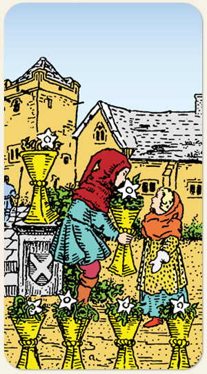

6 de Copas
A reparação mais a vontade de se misturar de copas, reparação afetiva, refrigério, ajuda, amparo, acolhimento.
Positivo: Presente, entrega, solução saída, chegada do socorro, acolhimento, reconciliação, lembrar dos bons momentos, reencontro, ser lembrado.
Negativo: Drama, dependência emocional, controle ou chantagem emocional, cobrar por favores feitos, codependência, presentear com a vontade de ser agradado, possibilidade de reconciliação sendo diluídas.
Símbolos: Flores Brancas.
Cores: Cor, Cor, Cor.